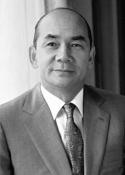
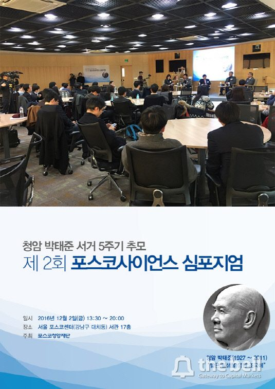

매체 The Bell보도일 2018-01-22
쇳물보다 먼저 나온 '철강왕 박태준'의 사재
[한국의 100대 공익재단-포스코]①1971년 '제철장학회' 설립, 교육재단·청암재단 '뿌리'

고 박태준 포스코 명예회장(사진)은 포스코 기틀을 세운 인물이다. 철강 불모지에서 맨손으로 세계 최고 철강기업을 키워냈다. 그가 천명한 '우향우 정신'과 '제철보국'은 포스코 기업 정신이 됐다. 이 뿐만이 아니다. 포스코 곳곳에 그의 사상과 흔적이 남아있다.
공익재단이 대표적이다. 포스코는 현재 포스코교육재단과 포스코청암재단, 포스코1%나눔재단 등 3개 공익법인을 운영하고 있다. 이 공익법인들의 실질적 뿌리가 바로 박 명예회장이 만든 '제철장학회'다.
박 명예회장은 1971년 1월 6000만 원의 사재를 털어 제철장학회를 설립했다. 포항제철소에서 처음 쇳물이 나온 날(1973년 7월)보다도 2년이 앞선 해였다. 사람이 먼저라는 박 명예회장의 경영 철학이 신속한 재단 설립의 동력이 됐다는 평가다.
초기 제철장학회는 지역 장학사업과 철강 기능 인력 육성 사업을 동시에 진행했다. 5년 후 교육 부문의 전문성을 높여야 된다고 판단, 학교법인 제철학원을 따로 만들었다.
제철장학회는 장학·학술·문화 사업으로 영역을 확대해 나갔고, 2005년 들어서 포스코청암재단으로 이름이 바뀐다. 학교법인 제철학원은 '포스코교육재단'의 모태가 된다. 포스코청암재단과 포스코교육재단 모두 그 뿌리가 제철장학회인 셈이다.
재단 설립자인 박 명예회장은 두 재단 운영에 있어서 중추적인 역할을 수행했다. 박 명예회장은 포스코교육재단의 설립 이사장을 맡았다. 박 명예회장이 기틀을 닦아준 탓에 포항-광양 지역 인재 배출의 요람으로 자리매김했다.
포스코교육재단은 현재 포항과 광양, 인천에 초등학교, 중학교, 고등학교에 이르는 교육 인프라를 구축하고 있다. 운영 학교수는 12곳이다. 포항 지역이 6곳으로 가장 많고, 광양과 인천에 각각 5곳, 1곳의 학교를 갖고 있다.
포스코교육재단은 학업 뿐만 아니라 수학과 과학, 체조, 축구, 예능 등 다양한 특기적성 교육으로도 주목을 받고 있다. 특히 체계적인 유소년 관리시스템을 통해 축구 명문학교로 이름을 날리고 있다.
포스코청암재단은 박 명예회장의 유지가 깃든 재단이다. 청암은 박 명예회장의 아호다. 포스코청암재단은 박태준 창업정신을 바탕으로 다양한 장학 사업을 펼치고 있다. 포스코청암상과 포스코아시아펠로십, 포스코사이언스펠로십이 간판 프로그램이다.

포스코청암재단이 2016년 12월 주최한 박태준 서거 5주기 추모 '제2회 포스코사이언스 심포지엄'.
포스코아시아펠로십은 아시아 지역 국가 인재 교류와 협력의 장이다. 아시아 학생의 한국유학을 돕고, 아시아 인문사회 연구를 지원하며, 문학지도 발간하고 있다. 아시아 지역 전문가 양성에도 힘을 싣고 있다.
포스코사이언스펠로십은 과학 분야 인재 육성에 방점을 두고 있다. 기초 과학을 연구하는 젊은 과학자를 선발해 국내에서안정적으로 연구에 전념할 수 있도록 지원하는 것이 골자다. 한국 소재 과학의 초석을 다지는데 기여하고자 했던 박 명예회장의 교육 이념이 고스란히 깃든 사업이라는 평가다.
박 명예회장의 포스코청암재단에 대한 예정은 각별했다. 박 명예회장은 2008년부터 재단 이사장을 맡았다. 정·재계 일선에서는 물러났지만 재단 사업만큼은 직접 챙겼다. 2011년 12월 작고하실 때까지 재단 일을 책임졌다. 이후부터는 포스코 수장들이 포스코청암재단의 이사장을 맡고 있다. 적통성을 잇는 인물들이 이사장 중책을 맡는 모습이다.
< 저작권자 ⓒ 자본시장 미디어 'thebell', 무단 전재 및 재배포 금지 >
이 기사는 2018년 01월 17일 15:05 더벨 유료페이지에 표출된 기사입니다.